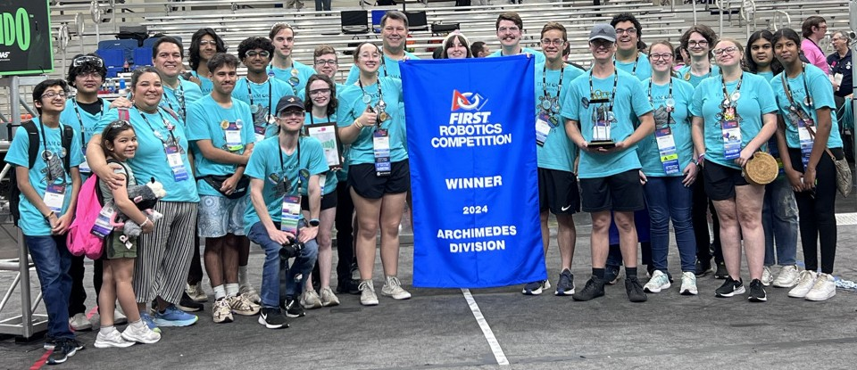

We are the Team OKC e'possums, a community-based FIRST robotics team! We are open to all students of the metro in the 9th-12th grade who want to be on a robotics team. We also have a 7th-8th grade FIRST Tech Challenge team and help run FIRST Lego League (K-8th grade) teams and events in the Oklahoma City area.
Team OKC Robotics works to make Science, Technology, Engineering and Math (STEM) skills and careers accessible to all high school students via participation in the FIRST Robotics Competition and through STEM-oriented service to our community.